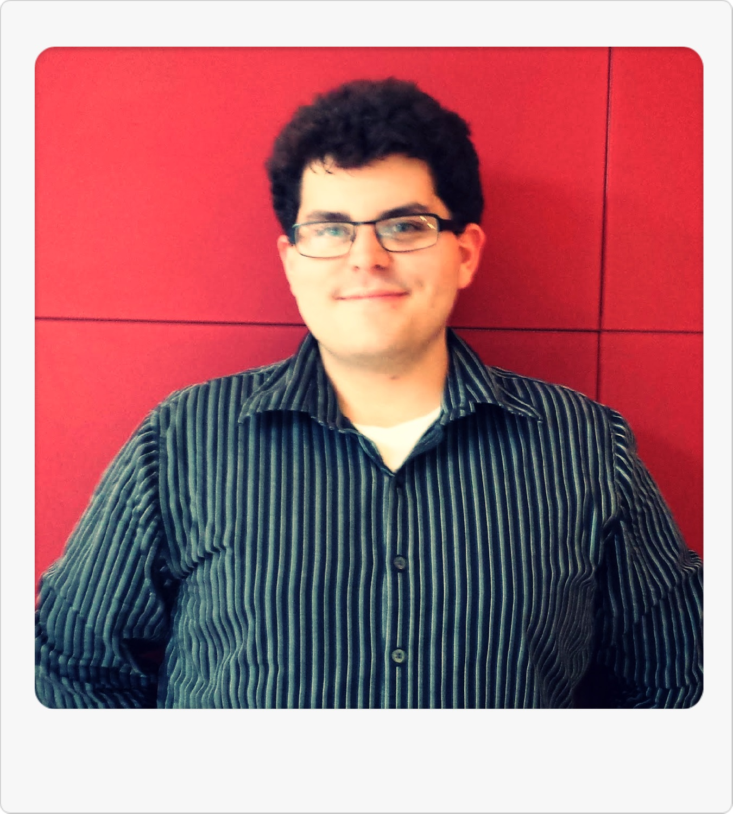

About Us
This Green Dining Map is the product of an undergraduate group project for the UW Nelson Institute for Environmental Studies food sustainability capstone led by Holly Gibbs. Our hope is to educate our community about the variety of sustainable dining options that are available on campus. There is currently a gap in information about the location, knowledge of food sustainability, and specific benefits from campus eateries that can be accessed in one place. After looking at food guides from other campuses, and finding that the UW Madison campus does not have one, we found it imperative to investigate our campus’ dining options and create something that can connect students to their food choices. Our team visited each eatery on campus and gathered information about the sustainable food options at each location. We decided to implement our findings in a user-friendly, familiar map interface in order to make information about menu items and food sustainability more accessible to students. We hope this map helps the campus community make more sustainable food choices in the future!
Meet the Team
| | Jen Tirella graduated in May 2014 with majors in Environmental Studies and Economics with Math emphasis. Jen was inspired to help educate the community about UW campus food sustainability after taking an Operations and Technology Management class through the business school during the Fall 2013 semester. She will continue to pursue her passion for sustainability in future endeavors.
|
| | Danielle Caputo graduated in May 2014 with a double major in Marketing and Environmental Studies. After several classes on food sustainability, Danielle wanted to learn more about campus sustainability and saw this capstone as the perfect opportunity to pursue this topic further. Danielle believes educating students on food sustainability has the ability for campus change and creating this map is the best way to connect with students and get them interested.
|

| | Russell Wagner graduated in May 2014 with a major in Community & Environmental Sociology and a certificate in Environmental Studies. Russell wanted to look further into this topic after taking People, Land, and Food with Holly Gibbs. During the class, he was part of a group examining composting at eateries on the UW campus, but felt the need to learn more about our campus food system.
|
Click here to learn more about food sustainability!
This link will provide you with additional information on your purchasing decisions!
Here is a PDF version of our course paper
which describes more detailed information about our Green Dining Map project.